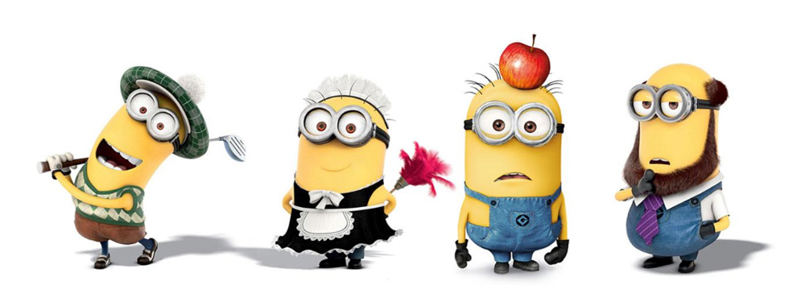
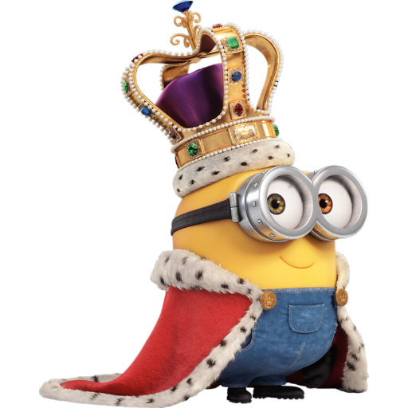

|  | |||||||
|
|||||||
| 人物简介 |
| 【主角】 首先是小黄人三人组的领导人物：凯文（Kevin）——小黄人心目中最黄最黄的黄太阳... 以小黄人的标准来说，凯文十分稳重，在电影中领导着三人组去给同胞们找新老大。除了敢于站出来领导外，凯文还十分有担当。最后Boss战里，巨大化后的凯文为了保护同胞吞下了斯嘉丽的熔岩导弹，然后抓住Overkill两夫妻自爆。然后，就是主角光环了......最后被英女王封爵。 人气颇高的文艺小黄人——斯图尔特（Stuart） 斯图尔特为什呢人气高？除了有文艺范，斯图尔特具备了合格的小黄人特质——贱萌。他保留了原作中小黄人的特点——事不关己没事捣乱，并且喜欢作死；比如用英女王赠送的高级贝斯演奏完后顺手砸了，郁闷了好一会......（当时直播着，估计已经有了不少粉丝。） 除了卖萌还是卖萌——鲍勃（Bob）  鲍勃十分孩子气，平时挺活泼，累了就让凯文或者斯图尔特杯子。一路上只是卖萌，没负怎么责任。但是运气是变态好的，在VillainCon的混战中抢到了斯嘉丽的红宝石（其实是为了抢泰迪熊），成功使三人组成为斯嘉丽的随从。接着抢皇冠是无意拔出石中剑，被加冕为"鲍勃王"，没当几天就被迫让位给斯嘉丽了。影片最后英女王给他赠送了一个小皇冠。 |
小黄人网站 |